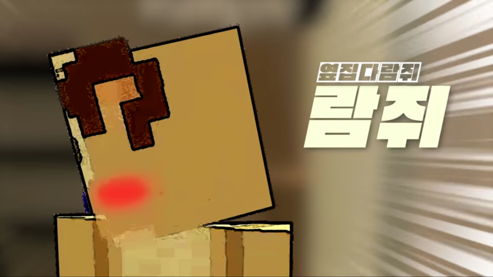

“앗땀매~”
“아따, 오따따따앗땀매~!”
“나. 박.람.지, 25년 인생 혼자 살아왔건만.”
“앗따, 요고시 또 떡.볶.이.코.트 아니여?”
“발 없는 말이 천 리 가는겨.”
“왜 웃는겨? 지금 내 패션을 비웃는겨?”
“나가 얼마나 패션에 진심인디!”
|  |
| 패션에 관심이 많은 프랑스 유학파 출신 다람쥐, ‘박 람지’. |
| 이름 | 박람지 | 대표색 | #fcae9f |
| 동물 | 다람쥐 | 아이콘 | |
| 나이 | 26세 | 직업 | 부띠끄 아르바이트생 |
대지네의 지하실로 이사 온 자빱의 옆집에 살고 있어 벽 사이에 뚫린 창문을 통해 첫 인사를 한다. 노래를 흥얼거리길 좋아하는 것 같다.
함께 식사하자는 명목으로 복수네 밀밭을 자빱이 털게 만들었다. 자빱이 곡길에게 발각되자 투명화물약을 먹고 혼자 도망치고, 자빱을 경찰서로 끌려가게 만들었다.1
이후에는 자빱에게 사과를 하며 부띠끄에서 알바도 시작한다.
패션에 열정이 가득해 패션 아이템을 선물받으면 엄청나게 기뻐한다.